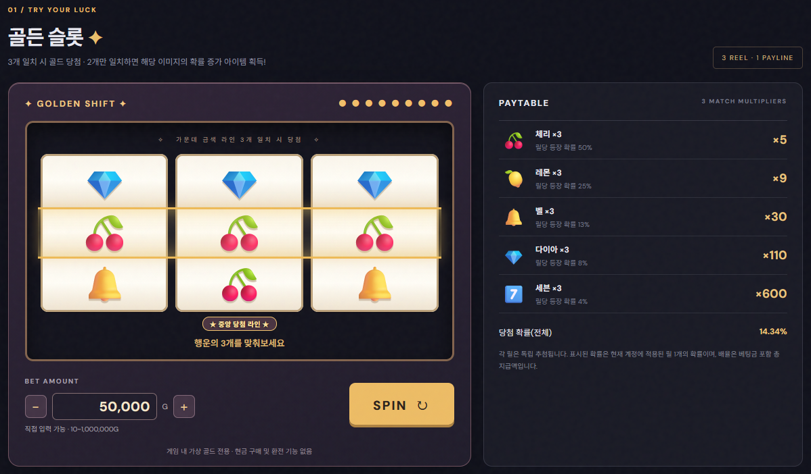
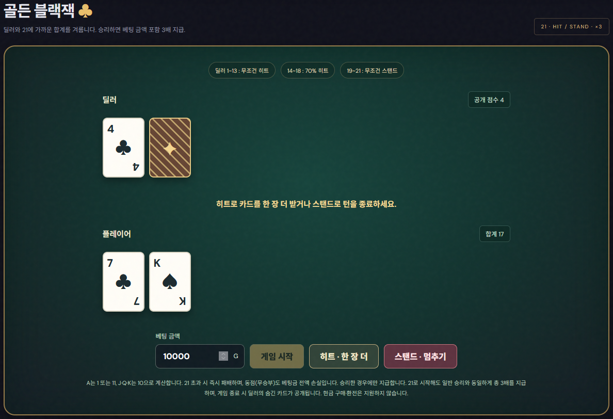
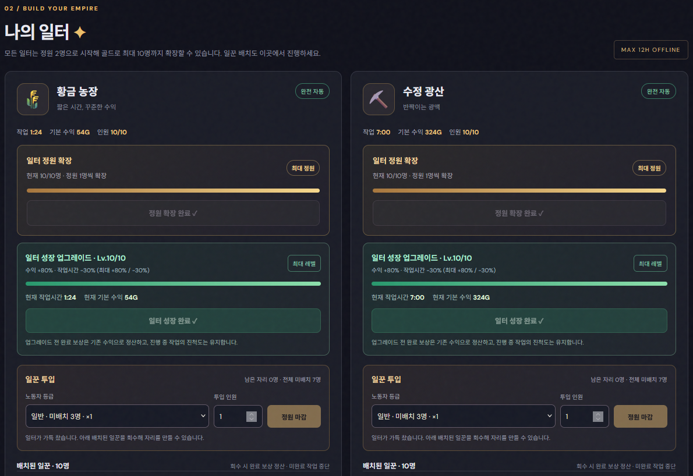
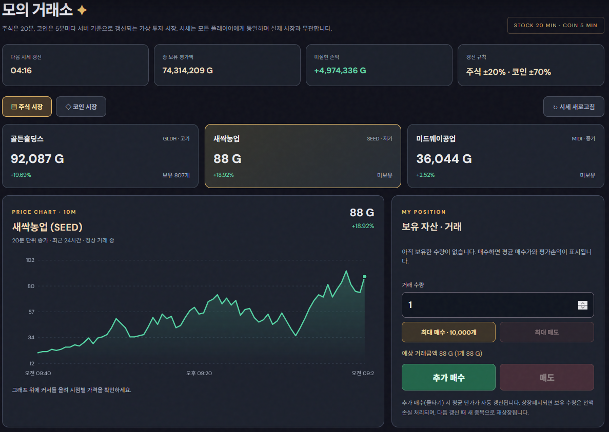

CASE 01 연출과 판정
3행 슬롯의 중앙만 당첨 판정
- 목표
- 세 줄 중 어느 줄이 실제 당첨에 쓰이는지 분명히 보여줘야 했습니다.
- 바꾼 점
- 릴을 왼쪽부터 멈추고 중앙에 금색 판정선을 표시합니다. 중앙 심볼은 서버 결과로 확정합니다.
- 결과
- v0.14.3 패치에서 서버 결과 일치와 모션 감소 설정을 확인했습니다.

PROJECT 02 개인 개발 / AI 협업
게임 규칙과 화면의 단서를 함께 다듬은 웹 게임
일꾼이 생산한 가상 골드를 슬롯, 블랙잭, 모의 투자에 쓰거나, 다시 일터를 키우는 웹 게임입니다.

ROLE CONTRIBUTION
슬롯 확률, 블랙잭 지급 조건, 일터 자동화와 같이 플레이 규칙을 정했습니다.
규칙을 클라이언트와 서버 코드와 회귀 테스트로 옮겼습니다.
PLAN GAME DESIGN
수동 근무로 시작해 일터별로 자동화를 해금합니다. 오프라인 생산은 접속 시 계산하며 최대 12시간까지 정산합니다.
HISTORY ITERATION
3릴 슬롯과 계정별 저장을 구성했습니다.
전체 상태 재조회를 줄이고 작업 후 버튼 잠금을 수정했습니다.
영구 보정을 다음 성공 스핀 한 번으로 바꿨습니다.
공통 시세와 계정별 보유량을 분리했습니다.
누적 시세를 18개씩 나누어 기록합니다.
딜러 규칙과 중앙 당첨선을 추가했습니다.
CASES IMPLEMENTATION
CASE 01 연출과 판정

CASE 02 지급 규칙

플레이어가 카드를 더 뽑을지 정할수있게 하고 딜러는 본인의 카드의 합이 19 ~ 21이면 무조건 스탑 1 ~ 13은 무조건 카드 한장 더 뽑고 14 ~ 18은 70%확률로 카드를 더 뽑게 해줘CASE 03 경제 규칙 변경
CASE 04 사용 중 발견한 문제

CASE 05 운영 장애 대응

SCREENSHOTS GAME SYSTEMS
NOTES 배포 및 운영
Workers에서 게임 API를 제공하고, Google 로그인으로 연결한 계정의 진행도를 D1에 저장합니다.
Workers, D1, Google OAuth를 연결했습니다. 세션 키를 다시 설정한 뒤 로그인이 됐습니다.
v0.7 인덱스 마이그레이션에서 인증 오류를 해결하고 적용 성공 후 Worker를 배포했습니다.
공개 주소의 진입 화면을 확인했습니다. 블랙잭, 중앙 릴, 시세 복구는 제공 패치에서 검사했습니다.